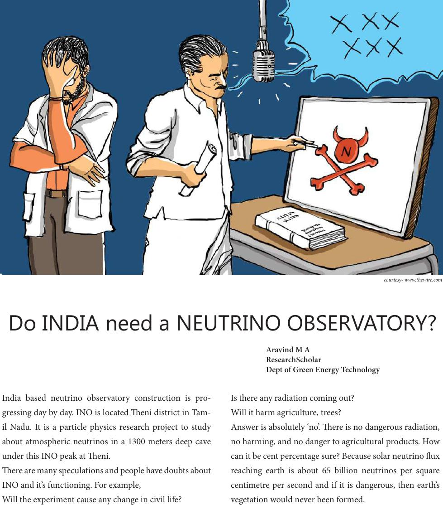

India based neutrino observatory construction is pro-
gressing day by day. INO is located eni district in Tam-
il Nadu. It is a particle physics research project to study
about atmospheric neutrinos in a 1300 meters deep cave
under this INO peak at eni.
ere are many speculations and people have doubts about
INO and it’s functioning. For example,
Will the experiment cause any change in civil life?
Is there any radiation coming out?
Will it harm agriculture, trees?
Answer is absolutely ‘no’. ere is no dangerous radiation,
no harming, and no danger to agricultural products. How
can it be cent percentage sure? Because solar neutrino ux
reaching earth is about 65 billion neutrinos per square
centimetre per second and if it is dangerous, then earth’s
vegetation would never been formed.
Aravind M A
ResearchScholar
Dept of Green Energy Technology
Do INDIA need a NEUTRINO OBSERVATORY?
courtesy- www.thewire.com